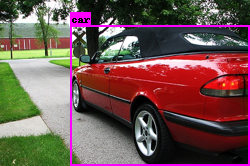
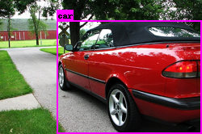

|
 |
物体認識と奥行き推定の説明に入る前に、 まずニューラルネットワークを使った画像認識システム VGG を紹介する。 VGG は 2015年に発表された有名なディープニューラルネットワークであり、 その構造は画像を扱う多くのニューラルネットワークにも模倣されている。 これは与えられた画像を 1000種類のどれかに分類するものである:
VGG-16 は計16個のレイヤー (13個の畳み込みレイヤー + 3個の全結合レイヤー) からなるニューラルネットワークで、 ImageNet データセットに含まれる 1000種類の画像を 91% 程度の精度で認識できる。 (ImageNet データセットには約130万枚の訓練用画像が含まれているが、 著作権上の理由により、現在、一般には非公開となっている。)
上の図にある Conv-3 (64) は
「3×3 のカーネルをもつ 64チャンネルの畳み込みレイヤー」をあらわす。
各畳み込みレイヤーおよび全接続レイヤーの後には ReLU 活性化関数が使われている。
VGG-16 の特徴は、以下の2点である:
Conv-3 (256) など同じチャンネル数の
レイヤーを複数回重ねている。ここで、ディープな畳み込みニューラルネットワークで使われることの多い パディング (padding) という技術について説明する。 これまでは畳み込みレイヤーでカーネルを使うと、 以下のような問題があった:
この問題に対処するため、入力画像の周囲にピクセルをつめて 画像サイズを広げることにする。 3×3 のカーネルを使う場合は、画像の周囲に1ピクセル分の 架空のピクセルがあると想定すると、この中でカーネル中心が動ける範囲は もとの画像の大きさに一致する。
PyTorch では、nn.Conv2d レイヤーを作成するさいに
nn.Conv2d(3, 64, 3, padding=1)
などと指定するとパディングが使われる。
カーネルが 3×3 の場合、パディングを 1 にすると
出力画像のサイズは入力画像のサイズと正確に同じになる。
以上をふまえて VGG-16 を PyTorch のコードで記述すると、
以下のようになる。VGG16 クラスでは、
各畳み込みレイヤーと全接続レイヤーに
conv1, fc14 などの番号をふっている。
Max pooling レイヤーは直前の畳み込みレイヤーと同じ番号にしてある:
import torch import torch.nn as nn import torch.nn.functional as F ## VGG16 ## class VGG16(nn.Module): def __init__(self): nn.Module.__init__(self) # x: (N × 3 × 224 × 224) self.conv1 = nn.Conv2d(3, 64, 3, padding=1) self.conv2 = nn.Conv2d(64, 64, 3, padding=1) self.pool2 = nn.MaxPool2d(2) # x: (N × 64 × 112 × 112) self.conv3 = nn.Conv2d(64, 128, 3, padding=1) self.conv4 = nn.Conv2d(128, 128, 3, padding=1) self.pool4 = nn.MaxPool2d(2) # x: (N × 128 × 56 × 56) self.conv5 = nn.Conv2d(128, 256, 3, padding=1) self.conv6 = nn.Conv2d(256, 256, 3, padding=1) self.conv7 = nn.Conv2d(256, 256, 3, padding=1) self.pool7 = nn.MaxPool2d(2) # x: (N × 256 × 28 × 28) self.conv8 = nn.Conv2d(256, 512, 3, padding=1) self.conv9 = nn.Conv2d(512, 512, 3, padding=1) self.conv10 = nn.Conv2d(512, 512, 3, padding=1) self.pool10 = nn.MaxPool2d(2) # x: (N × 512 × 14 × 14) self.conv11 = nn.Conv2d(512, 512, 3, padding=1) self.conv12 = nn.Conv2d(512, 512, 3, padding=1) self.conv13 = nn.Conv2d(512, 512, 3, padding=1) self.pool13 = nn.MaxPool2d(2) # x: (N × 512 × 7 × 7) self.fc14 = nn.Linear(512*7*7, 4096) self.fc15 = nn.Linear(4096, 4096) self.fc16 = nn.Linear(4096, 1000) # x: (N × 1000) return def forward(self, x): # x: (N × 3 × 224 × 224) x = self.conv1(x) x = F.relu(x) x = self.conv2(x) x = F.relu(x) ... # x: (N × 1000) x = F.log_softmax(x, dim=1) return x
上の VGG16 クラスの forward() メソッドを完成させ、
以下のコードを使って実行せよ:
net = VGG16() x = torch.rand((1,3,244,244)) y = net(x)
なお、実際に ImageNet の画像を使って訓練した VGG16 のモデルは torchvision モジュール として利用可能である。
さらにもうひとつ、VGG-16 発表時には知られていなかったが、 それ以降のディープラーニングでよく使われるようになった バッチ正規化 (batch normalization) と呼ばれるテクニックも 同時に紹介しておく。バッチ正規化は、各レイヤーにおける 入力の平均と分散が同一になるよう調整するものである。 バッチ正規化を使うと、各レイヤーへの入力が 同一の傾向をもつようになるため、学習の効率が高まり、 モデルの精度・学習速度ともに向上すると考えられている。 具体的には、各ミニバッチの平均と分散がそれぞれ β と γ になるよう調整する。 バッチ正規化の処理も微分可能であるので、 勾配降下法によって最適な β と γ を学習できる。
β と γ の値は各レイヤーの特徴量 (チャンネル) ごとに決定される。 バッチ正規化は、通常、活性化関数の直前に 「バッチ正規化レイヤー」をはさむことで実装する。 バッチ正規化レイヤーは現在のディープニューラルネットワークで 広く使われており、PyTorch でも標準で利用可能である:
nn.BatchNorm1d(ノード数) …
全接続レイヤー (1次元) のためのバッチ正規化レイヤーを作成する。
nn.BatchNorm2d(チャンネル数) …
畳み込みレイヤー (2次元) のためのバッチ正規化レイヤーを作成する。
BatchNorm2d レイヤーを使う
上の VGG16 クラスのコードを変更し、以下の例にならって
各畳み込みレイヤー (convXX) の後に、
BatchNorm2d レイヤー (normXX) を挿入せよ。
class VGG16(nn.Module):
def __init__(self):
nn.Module.__init__(self)
# x: (N × 3 × 224 × 224)
self.conv1 = nn.Conv2d(3, 64, 3, padding=1)
self.norm1 = nn.BatchNorm2d(64)
self.conv2 = nn.Conv2d(64, 64, 3, padding=1)
...
def forward(self, x):
# x: (N × 3 × 224 × 224)
x = self.conv1(x)
x = self.norm1(x)
x = F.relu(x)
...
本講座では使わないが、かつてニューラルネットワークで よく使われていた ドロップアウト (dropout) という 正規化テクニックについても簡単に触れておく。 これは、訓練時にニューラルネットワーク中のノードをランダムに 「間引く (thinning)」ことにより学習精度を向上させるものである。 なぜノードを間引くと学習精度が上がるのか? これは、ニューラルネットワークのノードに見られる 「共適用 (co-adaptataion)」という現象によるものである。 共適用とは「あるレイヤー中の複数のノードが、 たまたま同じ特徴を学習してしまう」ことをいう。 レイヤー中のノードは並列に動作するため、 同一レイヤーの別のノードが何を学習しているかについては関知しない。 そのため、訓練の進み方によっては、お互いに知らないまま 2つのノードがほとんど同じことをしている、ということも起こりうる。 これはノードが無駄になっているということであり、 ニューラルネットワークの実際の学習能力が見かけのノード数よりも 低くなっているということである。
この現象を緩和するため、ドロップアウトでは 訓練中に (各ミニバッチごとに) あるレイヤーのノードを 一定の確率でランダムに「無効にする」。 無効にされたノードは値も出力せず、勾配も計算しない。 ただしこうすると各ノードの出力値の和が減少してしまうため、 間引いた分の定数をかけることによって全体のつじつまを合わせる、 といった処理をおこなう。
PyTorch では、ドロップアウトは nn.Drouout クラスを
使って簡単に実現できる:
nn.Drouout(確率) …
ある確率でノードを無効化する dropout レイヤーを作成する。
Dropout はニューラルネットワークの精度を上げるものの、 使い方が難しいという欠点がある。まず、dropoutレイヤーは どのレイヤーに追加してもよいというものではなく、 試行錯誤が必要である。また、意図的にノードを使用しないため 訓練に時間がかかる。いっぽうバッチ正規化は同様の効果が より効率的に得られるため、バッチ正規化が知られるようになった現在では ドロップアウトはあまり使われなくなってきている。
YOLO (You Only Look Once) はディープラーニングを使った ポピュラーな物体認識アルゴリズムである。 これは画像をニューラルネットワークに一度通すと、 その中にどんな物体が、どの位置にあるかを判別できるようになっている。
(注意: 現在、YOLO には v1〜v5 までのバージョンがあり、 他にも条件を微妙に変えた様々なパターンが存在する。 本講座で取り上げるのは YOLO v1 をさらに単純化したバージョンであり、 認識性能は本物の YOLO ほどよくない。)
YOLO の基本的なアイデアは、 入力した画像 (224×224ピクセル) を 7×7 の升目 (セル) に分け、 おのおのに含まれている物体の種類と位置を推測するというものである。 まず簡単な問題として、7×7 の各セルに、あらかじめ定義した 20種類の物体のうちどれが写っているかを推測するタスクを考えてみよう。 入力はRGB画像とし、出力は各セルを 21要素の one-hot ベクトルで表現するとする:
0〜20までの「ラベル」
(0:なし、1:人間、2:コップ、...)MNIST や CIFAR-10 では画像全体にひとつのラベルを付与していたが、 ここでは物体 (あるいはその一部) が 7×7 の各セル内にどのように 分布しているかを予測させる (各セルの画像だけを見て物体を 判定しているわけではないことに注意)。 あとは、畳み込みニューラルネットワークを使って 入力から出力を推測させ、各セルの hot-oneベクトルを 交差エントロピー誤差で評価すればよい。 ここでセル c の出力を P(c)、 そのセルの正解 one-hotベクトルを P0(c) とすると、 各セルごとの損失は、以下のようになる (H は交差エントロピー誤差を表す) :
最終的な損失関数 L は、各セルの損失を合計したものになる:
YOLOは上のタスクを拡張し、各セル内の物体の種類に加えて、 その座標および大きさ (=矩形) も推測させるようにしたものである。 YOLOの入力および出力は以下のようになっている:
ここで、確信度、矩形の相対位置、矩形の大きさの値は、すべて 0〜1 の範囲で 表現できるよう取り決めておく (相対位置と大きさはそれぞれ 2つの値で表すので、 合計 1+2+2 = 5つの値が必要になる)。 こうするとニューラルネットワークの出力であるシグモイド関数の値を利用できる。 ここでは物体をあらわす矩形の中央は該当するセルの中にあると仮定しているので、 セルの左上隅を (0, 0)、右下隅を (1, 1) として表現すれば相対位置を表せる。 また、物体の大きさは入力画像 (224×224) 全体が 1×1 となるように正規化すればよい:
これに物体の種類を表す20要素を加えると、各セルに対して 合計25個の要素 (チャンネル) が出力されることになる。 YOLO は、この各要素をやや変則的な方法で計算している。 最終レイヤーで各チャンネルごとに同じ活性化関数を使うのではなく、 確信度・相対位置・大きさを表す 5つのチャンネルにはシグモイド関数を、 物体の種類を表す 20チャンネルにはSoftmax関数を適用している:
(注意: 本物の YOLO では、各セルには1個ではなくk個の矩形が 所属できるようになっているが、ここでは簡単のため各セルは たかだか1個の矩形のみを含むとした)
YOLO では、各セルに物体の中心があるかどうかによって、 その損失を以下のように場合分けして計算している:
上の式で dx0、dy0、w0、h0 は それぞれ当該セルに含まれている正解の矩形の相対位置および大きさである。 確信度の正解 conf0 はどうやって求めるのか? というと、 これは YOLO が予測した矩形と正解の 「重なり具合 (Intersection over Union, IOU)」を使っている (予測が完全に重なっている場合は 1 となり、まったく重なっていない場合は 0 となる)。 この式を見ると、矩形の相対位置・大きさに対しては標準的な二乗誤差を使い、 物体の種類に対しては交差エントロピー誤差を使っていることがわかる。 物体があるときに二乗誤差を 5倍し、ないときに 0.5倍しているのは (作者らによれば) 実際の画像では物体がないセルがほとんどであり、 こちらを優先させるためである。
以下に YOLOの各レイヤー構造を示す (なお、これはオリジナルの YOLOv1 ではなく、 よりコンパクトな YOLOv2 をベースに簡単化したものである)。 VGG-16 と同様に、YOLO のネットワークは画像が縮小されるに従って チャンネル数が 2倍に増えるようになっている。ただし VGG-16 と異なり、 Conv-3 レイヤーの間に Conv-1 (1×1 のカーネルをもつ畳み込みレイヤー) が 挟まれた構造になっている。(著者らによると、このように中間の 畳み込みレイヤーを小さくすることによって、計算量を削減できるらしい。) なお、図中には示されていないが、各畳み込みレイヤーの直後に バッチ正規化レイヤーと活性化関数が挿入されている。
YOLO のもうひとつの特徴として、活性化関数に 通常の ReLU ではなく LeakyReLU と呼ばれる 関数を使っていることがある。これは ReLU 関数を改良したもので、 通常の ReLU では x > 0 の勾配が完全にゼロになるところを、 LeakyReLU ではわずかに下向きの勾配 a をもつ。 従来の ReLU では x > 0 のときに勾配がゼロになり、 重みの更新ができなくなるが、LeakyReLU ではその間にもわずかな 勾配が残るため、重みの更新を行うことができる。
| ReLU | LeakyReLU |
PyTorch では LeakyReLU は
F.leaky_relu という関数で利用できる。
YOLO では、勾配として a = 0.1 を使っている:
x = F.leaky_relu(x, 0.1) # a=0.1
YOLO の訓練データには「PASCAL VOC データセット」というものを使う。 ここには約1万枚の画像と、そこに含まれている20種類の物体 (人間、自動車、椅子、犬、馬など) の矩形座標が記録されている。 なお後期バージョンの YOLOv3 では、より画像の数・種類ともに多い COCO データセットが使われている。
|
 |
VOC データセットには、画像に加えて、 以下のようなXML形式の アノテーション (annotation) が付随している:
<annotation>
<filename>000021.jpg</filename>
<object>
<name>dog</name>
<bndbox><xmin>1</xmin><ymin>235</ymin><xmax>182</xmax><ymax>388</ymax></bndbox>
</object>
<object>
<name>person</name>
<bndbox><xmin>210</xmin><ymin>36</ymin><xmax>336</xmax><ymax>482</ymax></bndbox>
</object>
...
これらのデータセットを使った、YOLO の訓練アルゴリズムは以下のようになる:
YOLO の訓練プロセスは、損失の計算方法が若干異なることを除けば、 他のほとんどニューラルネットワークと同じである。 ただし、実際には訓練データの XML を解析したり、 画像サイズをネットワークの入力 (224×224) に合わせて調整したり、 それに合わせて各セルごとの正解値を求める処理が結構複雑である。 このように、実際の機械学習のタスクにおいては、ニューラルネットワークの 学習そのものよりも、データの準備や結果の後処理などのプログラミングに 手間がかかることが多い。
以下に、YOLO を実際に実装してみたものを紹介する。 ここではモデルを簡単にするため、2種類 (人・自動車) の物体のみを認識するように なっている。
この演習には、4GB以上のメモリをもつ NVIDIA製の GPU が必要である。 (家庭用 PC なら、2017年以後に発売された GeForce シリーズが搭載されていれば、 ほぼ大丈夫なはずである。)
README.md … 説明文書。
yolo_net.py … ニューラルネットワーク本体である
YOLONetクラスを定義する。
yolo_train.py … 訓練用スクリプト。
yolo_eval.py … 評価・推論用スクリプト。
yolo_utils.py … 画像の調整、正解データの読み込みなどの雑多な処理。
PASCALVOC2007.zip が同じディレクトリ上に存在すると仮定している。
$ python yolo_train.py --epochs 100 --save-model ./yolo_model.pt ./PASCALVOC2007.zip
2021-12-23 13:36:22,812 INFO zip_path=./PASCALVOC2007.zip
2021-12-23 13:36:22,822 INFO images=5011
2021-12-23 13:36:22,832 INFO annots=5011
2021-12-23 13:36:22,977 INFO Loading: ./yolo_model.pt...
2021-12-23 13:36:22,977 ERROR Error: [Errno 2] No such file or directory: './yolo_model.pt' (このエラーは無視してよい)
2021-12-23 13:36:24,518 INFO *** epoch=1/100 ***
2021-12-23 13:36:36,509 INFO train: batch=10/157, loss=8.7703
2021-12-23 13:36:45,638 INFO train: batch=20/157, loss=9.0373
...
yolo_model.pt というファイルに保存される。
さて、YOLO では各物体の中心にもっとも近いセルだけが 矩形の情報をもつことになっているが、実際にはすべての セルに (確信度は低いものの) 矩形の情報が出力される。 これらの矩形をすべて有効とすると、ひとつの物体に対して 大量の矩形が出力されてしまう。そこで YOLO は出力に対して Non-Max Suppression (NMS) と呼ばれる後処理をおこなっている。 (NMS は YOLO に限らず、物体検出で一般的に使われている処理である。)
NMS の原理は単純である。これは確信度のもっとも高い矩形をとり出し、 それとある一定以上の比率で重なっている矩形をすべて削除していけばよい。
今回は後処理として、NMS の改良版である Soft-NMS という方法を使っている。 これは重なり合った各矩形を即削除するのではなく「確信度を減らす」 ことにより徐々に順位を下げていく方法である。 Soft-NMS の具体的なアルゴリズムは以下のようになっている:
exp(-C · IOU2) 倍する。
この結果、得られた矩形を表示すれば物体認識は完了である。
学習した YOLO のモデルを使って実際に認識をおこなうには、
以下の3通りの方法がある。どの場合も、保存されたモデルを
yolo_eval.py スクリプトの最初の引数として指定する。
output_image1.png のようなファイル名で保存される)
$ python yolo_eval.py ./yolo_model.pt image1.jpg image2.jpg ...
$ python yolo_eval.py ./yolo_model.pt --camera
$ python yolo_eval.py ./yolo_model.pt PASCALVOC2007.zip
ここで、mAP (mean Average Precision) という概念について説明しておく。 mAP は物体認識や情報検索の評価に使われる指標のひとつである。 実際には、こういったタスクの評価は簡単ではない。 すべての物体が (種類・矩形とも) 完璧に認識できた場合は単純なのだが、 以下のようなケースに対して適切なペナルティを与えたいからである:
mAP は個々の入力 (画像) に対する認識結果の AP (Average Precision) を平均したものである。 各AP は以下のようにして計算する:
YOLO に新しい種類の物体を認識させるためには、訓練データとなる PASCAL VOCデータセットのようなもの (アノテーション) を自分で作成する必要がある。 このためのソフトウェアを 画像アノテーションツール (image annotation tools) という。画像アノテーションツールは商用・フリーのものを含めて 多くの種類が存在するが、ここでは VGG の開発チームが製作した、 VGG Image Annotator (VIA) というツールを使用する。これはブラウザベースで動くため、 追加のインストールは必要ない。 VIA にはバージョン 2系列と バージョン 3系列があるが、 今回は バージョン2 を利用する (こちらのほうが使い勝手がよいため)。
via-2.0.11.zip をダウンロード・展開し、
ブラウザで via.html ファイルを開く。
name" と入力して
+ ボタンを押す。
ここでは属性の型 (Type) は "text" としているが、
いちいち種類を手入力するのが面倒な場合は、
これを "dropdown" に切り替え、選択肢を入力してもよい。
(この作業が必要なのは一度だけである。)
name欄にそれぞれの
物体の種類を入力する。なお、画面下部の属性パネルは
Space キーでオン・オフ可能である。
完成した JSON形式のファイルを PASCAL VOCと同等の XML形式に変換する via2voc.py というツールを用意した。 これは以下のようにして利用する:
C:\> python via2voc.py -O. output_json.json loading: output_json.json saved: ./yolo_sample1.xml ...
今回実装した YOLO の精度は、論文に載っている「本物」バージョンの YOLO よりも低い。 その最大の理由は、使っている訓練データの不足である。 本物の YOLO では、検出精度を高めるために以下のような方法を使っている:
画像認識のタスクでは、訓練データをいわば「水増し」するために データ拡張 (data augmentation) というテクニックを使うことが多い。 これは、もともとの画像にランダムな変換をほどこして訓練データに混ぜるもので、 必要な場合は正解の矩形データもそれに合わせて変換する (切り取り・左右反転など)。 データ拡張をおこなうことによって、訓練データを自動的に増やすことができる。 これはモデルが単純な特徴 (画像全体の明るさや、隣り合ったピクセルの色など) だけで 物体を判定するのを防ぎ、結果として精度が向上すると考えられている。
| 明るさを変える | 色調を変える | ノイズ付加 | 切り取り | 左右反転 | 画像の混合 |
訓練データの不足を補うのに使われるもうひとつの方法が 事前学習 (pretraining) である。これは「ニューラルネットワークの一部 (または全部) を、 あらかじめ (より訓練データが多い) 別のタスク用に訓練しておき、 その後本来のタスク用に訓練しなおす」というものである。
たとえば YOLO の論文では、最初の 13層の畳み込みレイヤーを まず ImageNet 用に訓練している。ImageNet は画像に含まれる物体が 1000種類のどれかを判定する単純なタスクであるが、PASCAL VOC に比べて 画像の数が数百倍多い。YOLO では、まず 13層の畳み込みレイヤーに 1000ノードの全接続層と Softmax活性化関数をつけたものを作り、 これを ImageNet の判定用に学習させる。つぎに 13層の畳み込みレイヤーの 重み・バイアスを残したままで畳み込みレイヤーを つけたし、今度は PASCAL VOC を使って YOLO 用に学習させる。 こうすることによって、ImageNet で学習した知識を YOLO にも 転用できると期待されている。
事前学習は、より一般的な手法である 転移学習 (transfer learning) と呼ばれるテクニックの一種とみなすことができる。 事前学習は、画像認識の分野では頻繁に利用されている。 これは「最初のほうのレイヤーが学習する特徴量は、 多くの画像認識関連のタスクで共通に利用可能であろう」という 仮説によるものである。多くの論文によれば、事前学習によって実際に 認識精度が向上することが報告されている。
演習 7-3. で使った
yolo_utils.py ファイルには、
COCO データセットを読み込む COCODataset クラスが用意されている。
COCO データセット をダウンロードし、
これを使って YOLO を訓練するよう改造せよ。
次に、2次元画像のみから (距離センサなどを使わずに) 畳み込みニューラルネットワークを使って 奥行きを推定するシステムを紹介する。 これは以下の論文で説明されているものである:
この研究では NYU Depth データセット というものを使っている。 ここには RGB画像と、赤外線センサによって得られた奥行き情報が ピクセルごとに関連づけられており、 ニューラルネットワークは画像と (1/4 ほど粗くした) 奥行き値との 対応関係を学習させている。
ここで使われているニューラルネットワークも VGG-16 を参考に作られている。 このシステムで特徴的なのは、最終的な結果を得るのに 2つのニューラルネットワークを 使っていることである。最初の「粗い (coarse)」ネットワークでは 入力画像からおおざっぱな奥行き情報のみを取得し、 次の「細かい (fine)」ネットワークでもう一度もとの画像を参考に 情報を洗練するというプロセスをとっている。 ここでも図中に示されていないが、各畳み込みレイヤーの直後には バッチ正規化レイヤーと ReLU 活性化関数が挿入されている。
奥行き推定システムの訓練は、2段階に分けて行われる。 まず訓練データを使って Coarse ネットワークだけを訓練し、 重み・バイアスを固定する。つぎに同じ画像を使って Fine ネットワークを訓練するが、このとき Coarseネットワークを 推論として使い、その結果を途中の (63×74×55) のチャンネルに 追加し 64チャンネルとしている。
上の図中にある「Conv-11, /4」「Conv-9, /2」という 畳み込みレイヤーは、それぞれ 「11×11のカーネルを使った、ストライド4の畳み込みレイヤー」 「9×9のカーネルを使った、ストライド2の畳み込みレイヤー」 を表している。ストライド (stride) とは、 カーネルが画像上を動くときの刻み幅のことである。 通常、カーネルのストライドは 1 だが、この例のように 2 や 4 のケースも存在する。ストライドが 2 の場合、カーネルが適用される ピクセルは下図の斜線部分のように「ひとつ飛ばし」になり、畳み込みの結果は 元画像の 1/2 に縮小されたものになる。これは max pooling とほぼ 同じ効果をもたらすが、ストライドを増やすか max pooling を使うか、 あるいは本手法のように両方使ったほうがよいのかは、はっきりとは決まっていない。
PyTorch では、nn.Conv2d レイヤーを作成するさいに
nn.Conv2d(3, 96, 11, stride=4)
などと指定するとストライドが指定できる。
奥行き推定システムでは、Coarse・Fine ネットワークのどちらも、 最終層で活性化関数を使わず、各ピクセルの推定距離 y を直接メートル単位で 返すようになっている (厳密には、距離の対数 log(y) を返す)。 このとき、正解に対する損失関数として、通常の平均二乗誤差ではなく 「スケール不変平均二乗誤差 (Scale-Invariant Mean Squared Error)」 というものを使っている。 これは、出力の絶対値だけでなく、その変動もできるだけ正解に 近づけるためである。通常の平均二乗誤差だけを使った場合、 値の大きさだけが重視されるため、「大きな値」と「小さな値」の差異は 検出できるものの、「大きな値」どうしの細かな差異は 相対的に小さくなってしまう:
奥行き推定システムでは 2つの誤差の平均をとって、 以下のような損失関数を使っている:
スケール不変平均二乗誤差 LSIMSE は、以下のようにして求められる:
| LSIMSE | = | Σ { (y - y) - (y0 - y0) }2 / N (ここで y = Σy/N および y0 = Σy0/N なので) |
| = | Σ { (y - y0)2 - 2(y - y0)(Σy - Σy0)/N + (Σy - Σy0)2/N2 } / N | |
| = | Σ(y - y0)2/N - 2(Σy - Σy0)(Σy - Σy0)/N + (Σy - Σy0)2/N | |
| = | LMSE - {Σ(y - y0)}2/N |
以下に PyTorch を使った奥行き推定システムの実行方法を紹介する。 奥行き推定システムの訓練は、2段階に分けて行われる。 まず Coarse ネットワークを訓練し、つぎに同じ訓練データを使って Fine ネットワークを訓練する。このとき Coarseネットワークを 推論として使っている。 訓練データとして使う NYU Depth データセットには 1,449枚の画像が含まれているが、これだけだと少ないため 訓練時には簡単なデータ拡張 (左右反転・色調補正) をおこなうようにしている。
この演習には、NVIDIA製の GPU (4GB以上のメモリをもつもの) が必要である。
README.md … 説明文書。
depth_net.py … CoarseNet および FineNet クラスを定義する。
depth_train.py … 訓練用スクリプト。
depth_eval.py … 評価・推論用スクリプト。
depth_utils.py … 画像の調整、正解データの読み込みなどの雑多な処理。
nyu_depth_v2_labeled.mat が
同じディレクトリ上に存在すると仮定している:
$ python depth_train.py --epochs 200 --model-coarse ./depth_model_coarse.pt ./nyu_depth_v2_labeled.mat
2021-12-17 22:25:49,447 INFO Loading: ./depth_net_coarse.pt...
2021-12-17 22:25:49,447 ERROR Error: [Errno 2] No such file or directory: './depth_net_coarse.pt' (このエラーは無視してよい)
2021-12-17 22:25:51,033 INFO *** epoch=1/200 ***
2021-12-17 22:26:19,796 INFO train: batch=10/46, loss=0.0090
2021-12-17 22:26:42,400 INFO train: batch=20/46, loss=0.0090
...
学習プロセスは 2時間程度で終了する。
学習したモデルは depth_model_coarse.pt というファイルに保存される。
depth_model_coarse.pt が必要である。
ここでもエポック数 200 としている:
$ python depth_train.py --train-fine --epochs 200 --model-coarse ./depth_model_coarse.pt --model-fine ./depth_model_fine.pt ./nyu_depth_v2_labeled.mat
2021-12-18 11:41:42,772 INFO Loading: ./depth_net_coarse.pt...
2021-12-18 11:41:44,633 INFO Loading: ./depth_net_fine.pt...
2021-12-18 11:41:44,634 ERROR Error: [Errno 2] No such file or directory: './depth_net_fine.pt' (このエラーは無視してよい)
2021-12-18 11:41:44,635 INFO *** epoch=1/200 ***
2021-12-18 11:41:51,311 INFO train: batch=10/46, loss=0.0058
2021-12-18 11:41:56,239 INFO train: batch=20/46, loss=0.0027
...
学習プロセスは 1時間程度で終了する。
学習したモデルは depth_model_fine.pt というファイルに保存される。
学習したモデルを使って実際に認識をおこなうには、 以下の方法がある。CoraseネットワークおよびFineネットワークの モデルが保存された 2つのファイルを指定する。
output_image1.png のようなファイル名で保存される)
$ python depth_eval.py ./depth_model_coarse.pt ./depth_model_fine.pt image1.jpg image2.jpg ...
$ python depth_eval.py ./depth_model_coarse.pt ./depth_model_fine.pt --camera